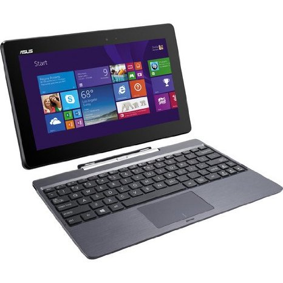

Introduction
From the makers of the Nexus 7, which pretty much got Android back in the tablet game, a convertible 10.1" slate is ready to step out of the living room and shake off the stay-at-home, only-good-for-media-consumption image of ten-inchers.
Fourth generation into it, the Transformer Pad lineup aims to offer a solution for both home and office. ASUS is unafraid to see Android as an environment where actual work can be done, and challenge the likes of the Microsoft Surface and the Lumia 2520.
Meet the ASUS Transformer Pad TF701T, the Android tablet that's not afraid to take anything you throw at it. Don't be afraid to come closer, it won't bite. But make no mistake about it, the Transformer Pad is one tough tablet and we're not just saying that because of its aluminum build.
See what we're on about.
Key features
10.1" LED-backlit IGZO Super IPS LCD capacitive touchscreen with a resolution of 2560 x 1600 pixels, 16M colors, 300ppi pixel density Android 4.2.2 Jelly Bean out of the box 1.9 GHz quad-core Cortex-A15 CPU, 72-core ULP GeForce GPU, 2GB of RAM, Nvidia Tegra 4 T40X chipset Docking station with a full QWERTY keyboard, 4170 mAh battery 5 MP autofocus camera with face detection, f/2.4 aperture; 1080p video recording @ 30fps 1.2MP front-facing camera 32/64GB internal storage, microSD card slot in tablet; full-size SDXC in dock Dual-band Wi-Fi 802.11 a/b/g/n support GPS with A-GPS connectivity Bluetooth v3.0 microUSB port with USB host, charging Accelerometer, gyroscope and proximity sensor Standard 3.5 mm audio jack Built-in stereo speakers 7,820 mAh battery Thin and light construction; solid build quality Dimensions: 263 x 180.8 x 8.9mm, 585g Dock dimensions: 263 x 180.8 x 7mm, 570g
Main disadvantages
No 3G, LTE Mobile dock feels a bit flimsy Bigger and heavier than its rivals Proprietary 32-pin connector Disappointing audio quality Mouthwatering specs and premium build quality are just a part of the story. Remember, this is a Transformer, so its mobile dock is a major element of the experience. Happily, ASUS have paid due attention to this part of the equation. It does not have the aluminum finish of the actual tablet, but we don't mind as it certainly helps keep both weight and price in check. ASUS has partnered with Sharp to catch up with Samsung and Apple and put forward a high-resolution display of its own. The 2560 x 1600 IPS screen of the Transformer Pad is going after the Samsung Note 10.1 2014 edition and the Apple iPad 4. With the Tegra 4 chipset featuring a quad-core Cortex-A15 CPU, the Transformer Pad has the processing power and future-proofing covered. The latest and greatest from Nvidia is eager to make up for lost time and this latest Transformer is its perfect playground.